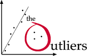

Data analytics

Data Analytics is the science of examining raw data with the purpose of drawing conclusions about that information. Data analytics is used in many industries to allow companies and organization to make better business decisions and in the sciences to verify or disprove existing models or theories.
Case study

This case study introduces the use of analytics by the British Sailing team for the olympics.
Top trends

Top trends in BI according to Tableau, a leader in Business Intelligence software.
Introduction to the first step in any data project, the data discovery stage.

Measures of variability include standard deviation for the sample and for the population. Measures of shape indicate the symmetry of a histogram.

Outliers are an important part of data analytics that must be dealt with.

Pivot tables are a very useful tool for the analysis and display of data
Advanced Data Analtyics

Advanced Analytics - Big Data